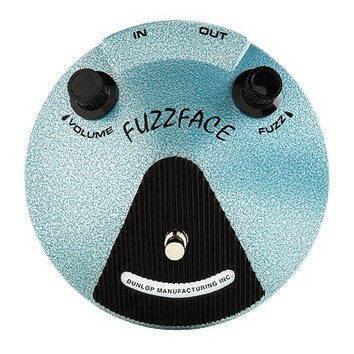
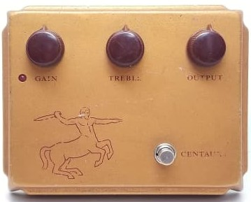
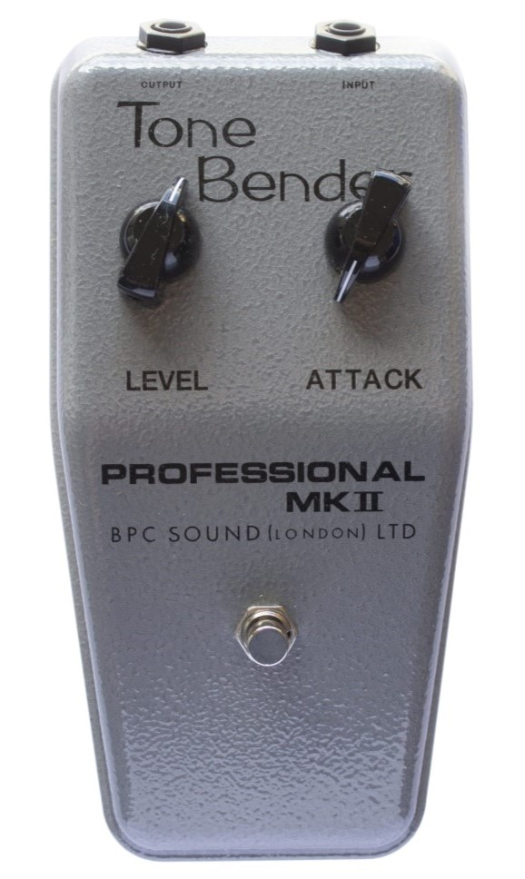

-
Fuzz Face
Pedal consagrado por muitos guitarristas, como Jimi Hendrix, Stevie Ray Vaughan e George Harrison
R$550
-
Klon
Pedal lendário e famoso por seu preço elevado devido à raridade e mitologia acerca de seu som. Utilizado por guitarristas como John Mayer, Joe Perry, Peter Frampton e Billy Gibbons
R$750
-
Tone Bender MKII
Um dos pedais de fuzz mais famosos da década de 60, se tornou famoso na mão de guitarristas como Jimmy Page, Jeff Beck e Mick Ronson
R$600